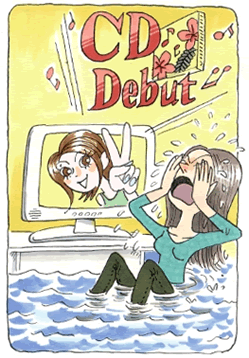

離人症（離人神経症）
今、今、今を生きる
（抑うつ神経症、離人神経症）
空野 ヒトミ（仮名）25歳・主婦
八方美人の典型であった私
私の家族構成は、父、母、姉の4人家族です。優しい両親の愛情に恵まれ、いつも休みの日にはどこかへ連れて行ってくれ両親が自分の前でケンカをしたことも記憶になく、人懐っこくてよく笑う普通の幸せな幼少時代を過ごしました。いつも褒められて育ったため、他人から少し怒られるだけでその人が大嫌いになりました。好き嫌いが激しく、人の顔色をばかりが気になっていきました。
寂しがり屋さんで、夜になったり静かになるとオバケがでてくるんではないかと心配になり、灯りをつけて、テレビのスイッチを入れ、コンポからは音楽を流しながら眠るような子でした。小さい時から負けず嫌いで常に目立ちたがり屋さんでした。その反面、とても恥ずかしがり屋というアンバランスなギャップがありました。
身体も弱いのに張り切ってテニス部に入ったり、音楽発表会で無理をしてピアノを弾いたり、負けず嫌いの性格が禍して地獄が始まりました。炎天下の中で行われる試合でフラフラになったり、朝礼も最後まで立っていられませんでした。人前でしんどいと言えず限界の限界まで我慢していました。言い出したら誰も止められないわがまま娘でした。テニス部のキャプテンになった時も、プレッシャーから、毎日「お腹痛いよぉ」と母に訴えては困らせていました。
高校へ行ってからは人付き合いが大好きなので、片っ端から友達作りをしていました。友達から言われたムリな願い事でもなんでもOKしてきました。「八方美人」の典型的な女の子だったんですね。みんなから愛されたい思いが強く一生懸命に頑張りましたが、それがいつも裏目に出て、友達から文句を言われ「なんでいつもこうなるの？」と自分で自分を責め続けました。
芸能界にあこがれて孤独な一人暮らし。パニックそして、挫折
それでも念願の「沖縄アクターズスクール大阪校」の第一期生としてオーディションに合格し、レッスンに通う日々を過ごしました。私は歌手になりたかったんです。レッスンを受けている日々はとても充実していました。高校の通学が苦痛となりだんだん休むようになっていきました。それでも試験になると、猛勉強していつも優秀な成績を収めて、友人や両親を驚かせていました。「試験の結果がよければ登校しなくても怒られずに済む。」というコツを覚えてしまい、ズル賢い高校生になっていました。
芸能界への憧れが強くレッスンは力が入り、クラスメートを押しのけて「場所取り戦争」が始まります。「誰よりも目立つ場所」にいつも執念を燃やしてメラメラしていました。10代の女の子なのにレッスン場へ来れば全て周りが敵と感じる空間……私はとうとう自分に押しつぶされてしまいました。
夢を失った私はやりがいのないバイトで一人暮らしとなりとても辛かったです。もともと一人ぼっちが嫌いな私です。倹約もしなければならず、怖がりの私が電気を消してじっと我慢して暗い部屋で朝を迎えるようになりました。必死で働いたお金も簡単に家賃などに消えて行き、欲しい物が買えません。食べないで我慢するという一日もありました。母はたまに米などを届けに来てくれましたがうまく甘える事を知らない私は母には心配かけまいと強がって毎日、ウドンか白米をおかず無しで食べていました。
それから症状が現れる日も遠くはありませんでした。仕事中にいきなり「自分が自分でない感覚」に陥り「ここはドコ？私はどうしちゃったんだ？」とパニックになり死ぬかと思いました。何とか勤務時間を終え、一人ぼっちの家に帰りました。孤独との戦いに敗れやがて私は母へ電話をしました。「助けて、もう限界、帰りたい。」と訴え泣きました。
抑うつ神経症、離人症に悩む
仕事も辞め、お金と孤独に縛られなくなった私は落ち着きを取り戻しましたが「環境が変わっても異変は収まらない」事に気づきました。毎日起きる度に身体が動かないのです。そして「自分が自分でない感覚」がどんどんひどくなり生きているのか死んでいるのかさえ解らないようになっていきました。精神科医から軽い抑うつ状態だと言われ精神安定剤を処方されました。
苦しい毎日、「あと何日苦しめば抜け出せるの？」と泣いても泣いても脱することは出来ませんでした。やがて喜怒哀楽も感じなくなり、テレビを見ても何をしていても「私は誰？」「私が何をしたっていうの？」としか言えなくなっていきました。「私に死ねる勇気があったらな……」と、今から思えば誠に危ない状況でした。

泣く事以外、何もできなかった私に追い打ちをかけるような衝撃が走りました。ある日、テレビをみていたらアクターズスクールの同期だった女の子がCDデビューをしたというCMが流れたのです。その瞬間、私は一日中大号泣していました。「なんで私ばっかりこんな目に合わなければならないの？」と。その子がデビューした事実を受け入れたくなくて神様、仏様を恨みました。
やがて、結婚。そんな中、ある時いつもより体調がすぐれず、食欲が無いなど体が重くて何もする気になれなくなりました。恐怖がよみがえり、すぐ病院へ行きました。するとお医者さんから意外な言葉を聞きました。「妊娠4週目に入ってます、おめでとうございます」と。私は想像もしていなかった診断結果に唖然としてしまい、車に乗った瞬間、子供の様に泣き叫んでいました。「離人感があることだけでも恐怖で、いっぱいなのに普通の人みたいに産めるわけがない」と思い、心の準備もできてなかった私は授かった事への罪悪感でパニックに陥ってしまいました。
路頭に迷う中で出会った体験フォーラム
路頭に迷う私……一体どうしたらよいのかと、藁にも縋る思いで私はネットで森田療法を検索しました。すると、公益財団法人メンタルヘルス岡本記念財団の「心の体験フォーラム」というサイト（ネット掲示板）に繋がり、泣きながら助けを呼びました。
何日かして覗いてみると、管理人さんから返事が来ていました。その時は管理人さんがどんな方なのか知る由もなく、顔も知らない人からのアドバイスを素直に聞き入れることは出来ませんでした。また、フォーラムに申し込んだその月に「何かヒントがあるかもしれない」と、これまで諦めていた生活の発見会の集談会にも参加しました。
その日の集談会にはいつも来られていない方々が、3名いらっしゃいました。東京からもその年輩の方を慕って若者男女と一緒にやって来られました。そして、その年輩の人がフォーラムの管理人さんだと知り、息が止まりそうになりました。ご一緒された若い方から、森田正馬先生の教えをこの管理人さんから学び救われたと、とてもハキハキと克服発表があったのです。どの方も、とても短期間の内に良くなられたと話されていました。
それからの私はフォーラムへの書き込みも熱心になり、症状を訴える私がだんだん居なくなり、森田正馬先生の教えである「今、今、今を生きる」ようになっていきました。妊娠したことがきっかけで「食」についても真剣に学ぶようになりました。それに前から興味のあった色彩検定3級を独学で勉強し試験に挑み、見事合格しました。
一番大切な教えは「神経症は病気ではない!!!」ということ。これまでの私は、病的異常感が強くこれを何としてでも解決したいという怨念のような心境に入り込んでいました。森田正馬先生の自由な生き方、考え方を教えていただき、もう異常感を敵視しないでも生きていくことが出来るようになりました。
怖がりの私が無事に玉のような男の子を出産したのも、毎日、多くのみなさんから温かい励ましを頂いたお陰です。本当にありがとうございました。ノイローゼであれほど苦しんできた私が、今では感謝で胸が一杯です。